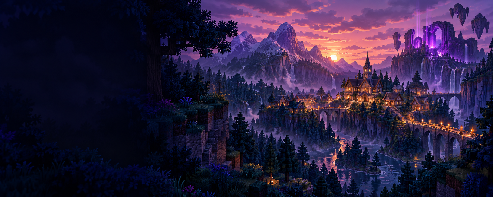

Jogue em equipe
O sistema de clãs reúne jogadores e oferece ferramentas de organização e comunicação.
↗MINECRAFT SURVIVAL MULTIPLAYER
26.2 / SMPUm mundo limitado.
Uma disputa sem roteiro.
Survival com foco em encontros, alianças e PvP. O mapa de 3 mil blocos coloca a comunidade no centro da experiência.

O SERVIDOR
O Mysterious SMP concentra a sobrevivência em um mapa com limite de 3 mil blocos. A proposta é simples: aproximar jogadores e tornar os encontros parte do jogo.
Construa sua base, organize seu grupo e escolha como disputar seu espaço. Antes de entrar, confira as orientações e os avisos da comunidade no Discord.
Acompanhar a comunidade ↗O sistema de clãs reúne jogadores e oferece ferramentas de organização e comunicação.
↗Consulte o guia para entender os plugins, encontrar comandos e tirar dúvidas de conexão.
↗O Discord concentra os avisos, as regras e o suporte do Mysterious SMP.
↗CONEXÃO
Adicione o servidor no Minecraft e participe da comunidade.
Dúvidas sobre Java e Bedrock ↗mysterysmp.jogar.ioCENTRAL DE INFORMAÇÕES